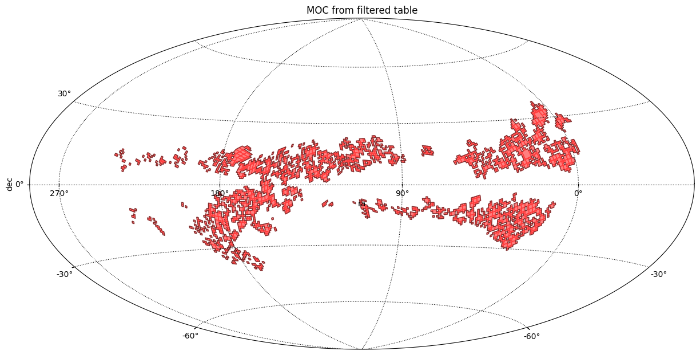

Create a MOC from a filtered astropy Table¶
[1]:
import astropy.units as u
from astropy.visualization.wcsaxes.frame import EllipticalFrame
from astroquery.vizier import Vizier
from mocpy import MOC
[2]:
viz = Vizier(columns=["*", "_RAJ2000", "_DEJ2000"])
viz.ROW_LIMIT = -1
table = viz.get_catalogs("I/293/npm2cros")[0]
[3]:
galex = MOC.from_fits("../resources/P-GALEXGR6-AIS-FUV.fits")
WARNING: Wrong depth_max 29. Reset to 13
[4]:
def plot(moc, title=""):
"""Create a plot of a MOC."""
import matplotlib.pyplot as plt
fig = plt.figure(figsize=(15, 10))
from astropy.wcs import WCS
wcs = WCS(naxis=2)
wcs.wcs.ctype = ["GLON-AIT", "GLAT-AIT"]
wcs.wcs.crval = [110.0, 0.0]
wcs.wcs.cdelt = [-0.675, 0.675]
wcs.wcs.crpix = [240.5, 120.5]
ax = fig.add_subplot(1, 1, 1, projection=wcs, frame_class=EllipticalFrame)
moc.fill(
ax=ax,
wcs=wcs,
edgecolor="r",
facecolor="r",
linewidth=1.0,
fill=True,
alpha=0.5,
)
moc.border(ax=ax, wcs=wcs, color="black", alpha=0.5)
ax.set_aspect(1.0)
plt.xlabel("ra")
plt.ylabel("dec")
if title:
plt.title(title)
plt.grid(color="black", linestyle="dotted")
plt.show()
plt.close()
plot(moc=galex, title="P-GALEXGR6-AIS-FUV")

[5]:
table
[5]:
Table length=46887
| _RAJ2000 | _DEJ2000 | NPM2 | KLA | RAJ2000 | DEJ2000 | ID | IQ | IN | r_Star | mag | tyc |
|---|---|---|---|---|---|---|---|---|---|---|---|
| deg | deg | mag | |||||||||
| float64 | float64 | str8 | str3 | str10 | str9 | uint8 | uint8 | uint8 | int16 | float32 | str1 |
| 339.638333 | 83.166667 | +83.0016 | HPM | 22 38 33.2 | +83 10 00 | 1 | 0 | 0 | 811 | 14.20 | |
| 339.638333 | 83.166667 | +83.0016 | HPM | 22 38 33.2 | +83 10 00 | 1 | 0 | 0 | 813 | 14.20 | |
| 349.530833 | 83.010556 | +83.0022 | VAR | 23 18 07.4 | +83 00 38 | 0 | 0 | 0 | 843 | -- | T |
| 349.530833 | 83.010556 | +83.0022 | SRA | 23 18 07.4 | +83 00 38 | 0 | 0 | 0 | 1 | 9.60 | T |
| 323.854167 | 82.997222 | +82.0030 | UBV | 21 35 25.0 | +82 59 50 | 0 | 0 | 0 | 5 | 10.08 | T |
| 332.107917 | 82.747500 | +82.0055 | WD | 22 08 25.9 | +82 44 51 | 0 | 0 | 0 | 1012 | 16.00 | |
| 332.933750 | 82.607778 | +82.0059 | HPM | 22 11 44.1 | +82 36 28 | 1 | 0 | 0 | 811 | 16.70 | |
| 335.088750 | 82.970833 | +82.0065 | HPM | 22 20 21.3 | +82 58 15 | 1 | 0 | 0 | 811 | 11.00 | T |
| 337.119167 | 82.763889 | +82.0074 | UBV | 22 28 28.6 | +82 45 50 | 0 | 0 | 0 | 5 | 10.42 | T |
| ... | ... | ... | ... | ... | ... | ... | ... | ... | ... | ... | ... |
| 257.227500 | -23.094167 | -23.0151 | ELS | 17 08 54.6 | -23 05 39 | 0 | 0 | 0 | 511 | 13.50 | |
| 267.989583 | -23.012222 | -23.0162 | CMC | 17 51 57.5 | -23 00 44 | 1 | 0 | 0 | 817 | 11.13 | T |
| 267.989583 | -23.012222 | -23.0162 | ELS | 17 51 57.5 | -23 00 44 | 1 | 0 | 0 | 252 | -- | T |
| 270.244583 | -23.032222 | -23.0164 | CMC | 18 00 58.7 | -23 01 56 | 1 | 0 | 0 | 817 | 10.52 | T |
| 270.244583 | -23.032222 | -23.0164 | EA | 18 00 58.7 | -23 01 56 | 0 | 0 | 0 | 1 | 10.20 | T |
| 270.337500 | -23.000556 | -23.0165 | COM | 18 01 21.0 | -23 00 02 | 0 | 0 | 0 | 819 | 11.20 | T |
| 270.442917 | -23.020000 | -23.0166 | UNK | 18 01 46.3 | -23 01 12 | 1 | 0 | 0 | 816 | 14.00 | |
| 270.474167 | -23.028889 | -23.0167 | COM | 18 01 53.8 | -23 01 44 | 0 | 1 | 0 | 819 | 11.60 | T |
| 271.357083 | -23.005556 | -23.0168 | ELS | 18 05 25.7 | -23 00 20 | 0 | 0 | 0 | 252 | -- | T |
| 271.357083 | -23.005556 | -23.0168 | OB | 18 05 25.7 | -23 00 20 | 0 | 0 | 0 | 393 | 9.70 | T |
[6]:
indexes = galex.contains_lonlat(
table["_RAJ2000"].T * u.deg,
table["_DEJ2000"].T * u.deg,
)
filtered_table = table[indexes]
filtered_table
[6]:
Table length=10714
| _RAJ2000 | _DEJ2000 | NPM2 | KLA | RAJ2000 | DEJ2000 | ID | IQ | IN | r_Star | mag | tyc |
|---|---|---|---|---|---|---|---|---|---|---|---|
| deg | deg | mag | |||||||||
| float64 | float64 | str8 | str3 | str10 | str9 | uint8 | uint8 | uint8 | int16 | float32 | str1 |
| 339.638333 | 83.166667 | +83.0016 | HPM | 22 38 33.2 | +83 10 00 | 1 | 0 | 0 | 811 | 14.20 | |
| 339.638333 | 83.166667 | +83.0016 | HPM | 22 38 33.2 | +83 10 00 | 1 | 0 | 0 | 813 | 14.20 | |
| 349.530833 | 83.010556 | +83.0022 | VAR | 23 18 07.4 | +83 00 38 | 0 | 0 | 0 | 843 | -- | T |
| 349.530833 | 83.010556 | +83.0022 | SRA | 23 18 07.4 | +83 00 38 | 0 | 0 | 0 | 1 | 9.60 | T |
| 323.854167 | 82.997222 | +82.0030 | UBV | 21 35 25.0 | +82 59 50 | 0 | 0 | 0 | 5 | 10.08 | T |
| 335.088750 | 82.970833 | +82.0065 | HPM | 22 20 21.3 | +82 58 15 | 1 | 0 | 0 | 811 | 11.00 | T |
| 337.119167 | 82.763889 | +82.0074 | UBV | 22 28 28.6 | +82 45 50 | 0 | 0 | 0 | 5 | 10.42 | T |
| 337.274583 | 82.662222 | +82.0075 | HPM | 22 29 05.9 | +82 39 44 | 1 | 1 | 0 | 811 | 17.40 | |
| 338.337917 | 82.369167 | +82.0079 | HPM | 22 33 21.1 | +82 22 09 | 1 | 0 | 0 | 811 | 16.20 | |
| ... | ... | ... | ... | ... | ... | ... | ... | ... | ... | ... | ... |
| 292.318750 | -22.677778 | -22.2070 | ELS | 19 29 16.5 | -22 40 40 | 0 | 0 | 0 | 520 | 13.50 | |
| 292.665000 | -22.236667 | -22.2079 | CMC | 19 30 39.6 | -22 14 12 | 1 | 0 | 0 | 817 | 12.57 | |
| 292.892917 | -22.538056 | -22.2084 | CMC | 19 31 34.3 | -22 32 17 | 1 | 0 | 0 | 817 | 11.12 | T |
| 293.529583 | -22.156389 | -22.2101 | CMC | 19 34 07.1 | -22 09 23 | 1 | 1 | 0 | 817 | 12.69 | |
| 293.727083 | -22.121667 | -22.2108 | CMC | 19 34 54.5 | -22 07 18 | 1 | 0 | 0 | 817 | 13.35 | |
| 294.078333 | -22.048333 | -22.2118 | CMC | 19 36 18.8 | -22 02 54 | 1 | 0 | 0 | 817 | 12.63 | |
| 294.845417 | -22.401667 | -22.2128 | CMC | 19 39 22.9 | -22 24 06 | 1 | 0 | 0 | 817 | 12.32 | |
| 295.010833 | -22.548333 | -22.2133 | HPM | 19 40 02.6 | -22 32 54 | 1 | 0 | 0 | 811 | 14.10 | |
| 297.006250 | -22.252500 | -22.2166 | CMC | 19 48 01.5 | -22 15 09 | 1 | 0 | 0 | 817 | 10.95 | T |
| 297.245417 | -22.472778 | -22.2169 | HPM | 19 48 58.9 | -22 28 22 | 1 | 2 | 0 | 811 | 15.60 |
[7]:
m1 = MOC.from_lonlat(
table["_RAJ2000"].T * u.deg,
table["_DEJ2000"].T * u.deg,
max_norder=6,
)
m2 = MOC.from_lonlat(
filtered_table["_RAJ2000"].T * u.deg,
filtered_table["_DEJ2000"].T * u.deg,
max_norder=6,
)
plot(moc=m1, title="MOC from table")
plot(moc=m2, title="MOC from filtered table")

